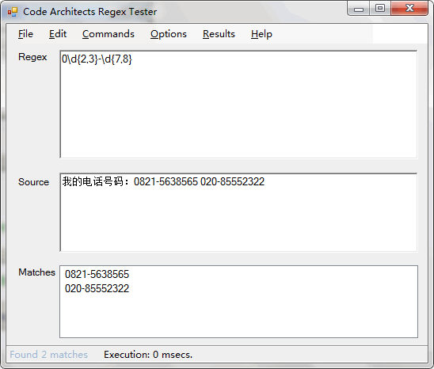

来自：deerchao.net
作者：deerchao
链接：http://deerchao.net/tutorials/regex/regex.htm （点击尾部阅读原文前往）
30分钟内让你明白正则表达式是什么，并对它有一些基本的了解，让你可以在自己的程序或网页里使用它。
最重要的是——请给我30分钟， 如果你没有使用正则表达式的经验，请不要试图在30秒内入门——除非你是超人 :)
别被下面那些复杂的表达式吓倒，只要跟着我一步一步来，你会发现正则表达式其实并没有你 想像中的那么困难。当然，如果你看完了这篇教程之后，发现自己明白了很多，却又几乎什么都记不得，那也是很正常的——我认为，没接触过正则表达式的人在看 完这篇教程后，能把提到过的语法记住80%以上的可能性为零。这里只是让你明白基本的原理，以后你还需要多练习，多使用，才能熟练掌握正则表达式。
除了作为入门教程之外，本文还试图成为可以在日常工作中使用的正则表达式语法参考手册。就作者本人的经历来说，这个目标还是完成得不错的 ——你看，我自己也没能把所有的东西记下来，不是吗？
清除格式 文本格式约定：专业术语 元字符/语法格式 正则表达式 正则表达式中的一部分(用于分析) 对其进行匹配的源字符串 对正则表达式或其中一部分的说明
隐藏边注 本文右边有一些注释，主要是用来提供 一些相关信息，或者给没有程序员背景的读者解释一些基本概念，通常可以忽略。
字符是计算机软件处理文字时最基本的单位，可能是字母，数字， 标点符号，空格，换行符，汉字等等。字符串是0个或更多个字符的序列。文本也就是文字，字符串。说某个字符串匹配某个正则表达 式，通常是指这个字符串里有一部分（或几部分分别）能满足表达式给出的条件。
在编写处理字符串的程序或网页时，经常会有查找符合某些复杂规则的字符串的需要。正则表达式就 是用于描述这些规则的工具。换句话说，正则表达式就是记录文本规则的代码。
很可能你使用过Windows/Dos下用于文件查找的通配符(wildcard)， 也就是*和?。如果你想查找某个目录下的所 有的Word文档的话，你会搜索*.doc。在这里，*会被解释成任意的字符串。和通配符类似，正则表达式也是用来进行文本匹配的工具，只不过比起通配符，它能更精 确地描述你的需求——当然，代价就是更复杂——比如你可以编写一个正则表达式，用来查找所有以0开头，后面跟着 2-3个数字，然后是一个连字号“-”，最后是7或8位数字的字符串(像010-12345678或0376-7654321)。
入门
学习正则表达式的最好方法是从例子开始，理解例子之后再自己对例子进行修改，实验。下面给出了不少简单的例子，并对它们作了详细的说明。
假设你在一篇英文小说里查找hi，你可以使用正则表达式hi。
这几乎是最简单的正则表达式了，它可以精确匹配这样的字符串：由两个字符组成，前一个字符是h,后 一个是i。通常，处理正则表达式的工具会提供一个忽略大小写的选项，如果选中了这个选项，它可以匹配hi,HI,Hi,hI这四种情况中的任意一种。
不幸的是，很多单词里包含hi这两个连续的字符，比如him,history,high等等。用hi来查找的话，这里边的hi也会被找出来。如果要精确地查找hi这个单词的 话，我们应该使用\bhi\b。
\b是正则表达式规定的一个特殊代码（好吧，某些人叫它元字符，metacharacter），代表着单词的开头或结尾，也就 是单词的分界处。虽然通常英文的单词是由空格，标点符号或者换行来分隔的，但是\b并 不匹配这些单词分隔字符中的任何一个，它只匹配一个位置。
如果需要更精确的说法，\b匹配这样的位置：它的前一个字符 和后一个字符不全是(一个是,一个不是或不存在)\w。
假如你要找的是hi后面不远处跟着一个Lucy，你应该用\bhi\b.*\bLucy\b。
这里，.是另一个元字符，匹配除了换行符以 外的任意字符。*同样是元字符，不过它代表的不是字符，也不是位置，而是数量——它 指定*前边的内容可以连续重复使用任意次以使整个表达式得到匹配。因此，.*连在一起就意味着任意数量的不包含换行的字符。现在\bhi\b.*\bLucy\b的意思就很明显了：先是一个单词 hi,然后是任意个任意字符(但不能是换行)，最后是Lucy这个单词。
换行符就是'\n',ASCII编码为10(十六进制0x0A)的字符。
如果同时使用其它元字符，我们就能构造出功能更强大的正则表达式。比如下面这个例子：
0\d\d-\d\d\d\d\d\d\d\d匹配这样的字符串：以0开头，然后是两个数字，然后是一个连字号“-”，最后是8个数字(也就是中国的电话号码。当然，这个例子只 能匹配区号为3位的情形)。
这里的\d是个新的元字符，匹配一位数字 (0，或1，或2，或……)。-不是元字符，只匹配它本身——连字符(或者减号，或 者中横线，或者随你怎么称呼它)。
为了避免那么多烦人的重复，我们也可以这样写这个表达式：0\d{2}-\d{8}。 这里\d后面的{2}({8})的意思是前面\d必须连续重复匹配2次(8次)。
其它可用的测试工具:
RegexBuddy
Javascript正则表达式在线测试工具
如果你不觉得正则表达式很难读写的话，要么你是一个天才，要么，你不是地球人。正则表达式的语法很令人头疼，即使对经常使用它的人来说也是 如此。由于难于读写，容易出错，所以找一种工具对正则表达式进行测试是很有必要的。
不同的环境下正则表达式的一些细节是不相同的，本教程介绍的是微软 .Net Framework 2.0下正则表达式的行为，所以，我向你介绍一个.Net下的工具Regex Tester。首先你确保已经安装了.Net Framework 2.0，然后下载Regex Tester。这是个绿色软件，下载完 后打开压缩包,直接运行RegexTester.exe就可以了。
下面是Regex Tester运行时的截图：

现在你已经知道几个很有用的元字符了，如\b,.,*，还有\d. 正则表达式里还有更多的元字符，比如\s匹配任意的空白 符，包括空格，制表符(Tab)，换行符，中文全角空格等。\w匹配字母或数字或下划线或汉字等。
对中文/汉字的特殊处理是由.Net提供的正则表达式引擎支持的，其它环境下的具体情况请查看 相关文档。
下面来看看更多的例子：
\ba\w*\b匹配以字母a开头的单词——先是某个单词开始处(\b)，然后是字 母a,然后是任意数量的字母或数字(\w*)， 最后是单词结束处(\b)。
好吧，现在我们说说正则表达式里的单词是什么意思吧：就是不少于一个的连续的\w。不错，这与学习英文时要背的成千上万个同名的东西的确关系不大 :)
\d+匹配1个或更多连续的数字。 这里的+是和*类似的元字符，不同的是*匹配重复任意次(可能是0次)，而+则匹配重复1次或更多次。
\b\w{6}\b 匹配刚好6个字符的 单词。
| 代码 | 说明 |
|---|---|
| . | 匹配除换行符以外的任意字符 |
| \w | 匹配字母或数字或下划线或汉字 |
| \s | 匹配任意的空白符 |
| \d | 匹配数字 |
| \b | 匹配单词的开始或结束 |
| ^ | 匹配字符串的开始 |
| $ | 匹配字符串的结束 |
正则表达式引擎通常会提供一个“测试指定的字符串是否匹配一个正则表达式”的方法，如JavaScript里的 RegExp.test()方法或.NET里的Regex.IsMatch()方法。这里的匹配是指是字符串里有没有符合表达式规则的部分。如果不使用^和$的话，对于\d{5,12}而言，使用这样的方法就只能保证字符串里包含5到 12连续位数字，而不是整个字符串就是5到12位数字。
元字符^（和数字6在同一个键位上的符号）和$都 匹配一个位置，这和\b有点类似。^匹配你 要用来查找的字符串的开头，$匹配结尾。这两个代码在验证输入的内容时非常有用，比如一个网站如果 要求你填写的QQ号必须为5位到12位数字时，可以使用：^\d{5,12}$。
这里的{5,12}和前面介绍过的{2}是 类似的，只不过{2}匹配只能不多不少重复2次，{5,12}则是重复的次数不能少于5次，不能多于12次， 否则都不匹配。
因为使用了^和$，所以输入 的整个字符串都要用来和\d{5,12}来匹配，也就是说整个输入必须是5到12个数字，因此如果输入的QQ号能匹配这个正则表达式的话，那就符合要求了。
和忽略大小写的选项类似，有些正则表达式处理工具还有一个处理多行的选项。如果选中了这个选项，^和$的意义就变成了匹配行的开始处和结束处。
如果你想查找元字符本身的话，比如你查找.,或者*,就出现了问题：你没办法指定它们，因为它们会被解释成别的意思。这时你就得使用\来取消这些字符的特殊意义。因此，你应该使用\.和\*。当然，要查找\本身，你也得用\\.
例如：deerchao\.net匹配deerchao.net，C:\\Windows匹配C:\Windows。
你已经看过了前面的*,+,{2},{5,12}这几个匹配重复的方式了。下面是 正则表达式中所有的限定符(指定数量的代码，例如*,{5,12}等)：
| 代码/语法 | 说明 |
|---|---|
| * | 重复零次或更多次 |
| + | 重复一次或更多次 |
| ? | 重复零次或一次 |
| {n} | 重复n次 |
| {n,} | 重复n次或更多次 |
| {n,m} | 重复n到m次 |
下面是一些使用重复的例子：
Windows\d+匹配Windows 后面跟1个或更多数字
^\w+匹配一行的第一个单词(或整个字 符串的第一个单词，具体匹配哪个意思得看选项设置)
要想查找数字，字母或数字，空白是很简单的，因为已经有了对应这些字符集合的元字符，但是如果你想匹配没有预定义元字符的字符集合(比如元 音字母a,e,i,o,u),应该怎么办？
很简单，你只需要在方括号里列出它们就行了，像[aeiou]就匹配任何一个英文元音字母，[.?!]匹配标点符号(.或?或!)。
我们也可以轻松地指定一个字符范围，像[0-9]代 表的含意与\d就是完全一致的：一位数字； 同理[a-z0-9A-Z_]也完全等同于\w（如 果只考虑英文的话）。
下面是一个更复杂的表达式：\(?0\d{2}[) -]?\d{8}。
“(”和“)”也是元字符，后面的分组节里会提 到，所以在这里需要使用转义。
这个表达式可以匹配几种格式的电话号码，像(010)88886666，或022-22334455， 或02912345678等。我们对它进行一些分析吧：首先是一个转义字符\(,它能出现0次或1次(?),然后是一个0，后面跟着2个数字(\d{2})，然后是)或-或空格中 的一个，它出现1次或不出现(?)，最后是8个数字(\d{8})。
不幸的是，刚才那个表达式也能匹配010)12345678或(022-87654321这样的“不正确”的格式。要解决这个问题，我们需要用到分枝条件。正则表达式里的分枝条件指的是有几种规则，如 果满足其中任意一种规则都应该当成匹配，具体方法是用|把不同的规则分隔开。听不明白？没关系，看 例子：
0\d{2}-\d{8}|0\d{3}-\d{7}这个表达式能匹配两种以连字号分隔的电话号码：一种是三位区号，8位本地号(如010-12345678)，一种是4位区号，7位本地号 (0376-2233445)。
\(0\d{2}\)[- ]?\d{8}|0\d{2}[- ]?\d{8}这 个表达式匹配3位区号的电话号码，其中区号可以用小括号括起来，也可以不用，区号与本地号间可以用连字号或空格间 隔，也可以没有间隔。你可以试试用分枝条件把这个表达式扩展成也支持4位区号的。
\d{5}-\d{4}|\d{5}这个表达式用于匹配美国的邮政编码。美国邮编 的规则是5位数字，或者用连字号间隔的9位数字。之所以要给出这个例子是因为它能说明一个问题：使用分枝条件时，要注意各个条件的顺序。 如果你把它改成\d{5}|\d{5}-\d{4}的话，那么就只会匹配5位的邮编(以及9位邮 编的前5位)。原因是匹配分枝条件时，将会从左到右地测试每个条件，如果满足了某个分枝的话，就不会去再管其它的条件了。
我们已经提到了怎么重复单个字符（直接在字符后面加上限定符就行了）；但如果想要重复多个字符又该怎么办？你可以用小括号来指定子表达式(也叫做分组)，然后你就可以指定这个子表达 式的重复次数了，你也可以对子表达式进行其它一些操作(后面会有介绍)。
(\d{1,3}\.){3}\d{1,3}是一个简单的IP地址匹配表达式。要理解这个表达式，请按下列顺序分析它：\d{1,3}匹 配1到3位的数字，(\d{1,3}\.){3}匹 配三位数字加上一个英文句号(这个整体也就是这个分组)重 复3次，最后再加上一个一到三位的数字(\d{1,3})。
IP地址中每个数字都不能大于255，大家千万不要被《24》第三季的编剧给忽悠了……
不幸的是，它也将匹配256.300.888.999这种不可能存在的IP地 址。如果能使用算术比较的话，或许能简单地解决这个问题，但是正则表达式中并不提供关于数学的任何功能，所以只能使用冗长的分组，选择，字符类来描述一个 正确的IP地址：((2[0-4]\d|25[0-5]|[01]?\d\d?)\.){3}(2[0-4]\d|25[0-5]|[01]?\d\d?)。
理解这个表达式的关键是理解2[0-4]\d|25[0-5]|[01]?\d\d?， 这里我就不细说了，你自己应该能分析得出来它的意义。
有时需要查找不属于某个能简单定义的字符类的字符。比如想查找除了数字以外，其它任意字符都行的情况，这时需要用到反义：
| 代码/语法 | 说明 |
|---|---|
| \W | 匹配任意不是字母，数字，下划线，汉字的字符 |
| \S | 匹配任意不是空白符的字符 |
| \D | 匹配任意非数字的字符 |
| \B | 匹配不是单词开头或结束的位置 |
| [^x] | 匹配除了x以外的任意字符 |
| [^aeiou] | 匹配除了aeiou这几个字母以外的任意字符 |
例子：\S+匹配不包含空白符的字符串。
<a[^>]+>匹配用 尖括号括起来的以a开头的字符串。
使用小括号指定一个子表达式后，匹配这个子表达式的文本(也就是此分组捕获的内容)可以在表达式或其它 程序中作进一步的处理。默认情况下，每个分组会自动拥有一个组号，规则是：从左向右，以分组的左括 号为标志，第一个出现的分组的组号为1，第二个为2，以此类推。
呃……其实,组号分配还不像我刚说得那么简单：
分组0对应整个正则表达式
实际上组号分配过程是要从左向右扫描两遍的：第一遍只给未命名组分配，第二遍只给命名组分配－－因此所有命名组的组号都大于未命名的组 号
你可以使用(?:exp)这样的语法来剥夺一个分组对组号分配的参与权．
后向引用用于重复搜索前面某个分组匹配的文本。例如，\1代表分组1匹配的文本。难以理解？请看示例：
\b(\w+)\b\s+\1\b可以用来匹配重复的单词，像go go, 或者kitty kitty。这个表达式首先是一个单词， 也就是单词开始处和结束处之间的多于一个的字母或数字(\b(\w+)\b)， 这个单词会被捕获到编号为1的分组中，然后是1个或几个空白符(\s+)，最后是分组1中捕获的内容（也就是前面匹配的那个单词）(\1)。
你也可以自己指定子表达式的组名。要指定一个子表达式的组名，请使用这样的语法：(?<Word>\w+)(或者把尖括号换成'也 行：(?'Word'\w+)),这样就把\w+的 组名指定为Word了。要反向引用这个分组捕获的 内容，你可以使用\k<Word>,所以上一个例子也可以写成这样：\b(?<Word>\w+)\b\s+\k<Word>\b。
使用小括号的时候，还有很多特定用途的语法。下面列出了最常用的一些：
| 分类 | 代码/语法 | 说明 |
|---|---|---|
| 捕获 | (exp) | 匹配exp,并捕获文本到自动命名的组里 |
| (?<name>exp) | 匹配exp,并捕获文本到名称为name的组里，也可以写成 (?'name'exp) | |
| (?:exp) | 匹配exp,不捕获匹配的文本，也不给此分组分配组号 | |
| 零宽断言 | (?=exp) | 匹配exp前面的位置 |
| (?<=exp) | 匹配exp后面的位置 | |
| (?!exp) | 匹配后面跟的不是exp的位置 | |
| (?<!exp) | 匹配前面不是exp的位置 | |
| 注释 | (?#comment) | 这种类型的分组不对正则表达式的处理产生任何影响，用于提供注释让人阅 读 |
我们已经讨论了前两种语法。第三个(?:exp)不会改变正则表达式的处理方式，只 是这样的组匹配的内容不会像前两种那样被捕获到某个组里面，也不会拥有组号。“我为什么会想要这样 做？”——好问题，你觉得为什么呢？
地球人，是不是觉得这些术语名称太复杂，太难记了？我也有同感。知道有这么一种东西就行了，它叫什么，随它去 吧！人若无名，便可专心练剑；物若无名，便可随意取舍……
接下来的四个用于查找在某些内容(但并不包括这些内容)之前或之后的东西，也就是说它们像\b,^,$那样用于指定一个位置，这个位置应该满足一定的 条件(即断言)，因此它们也被称为零宽断言。最好还是拿例子来说明吧：
断言用来声明一个应该为真的事实。正则表达式中只有当断言为真时才会继续进行匹配。
(?=exp)也叫零宽度正预测先行断言， 它断言自身出现的位置的后面能匹配表达式exp。比如\b\w+(?=ing\b)， 匹配以ing结尾的单词的前面部分(除了ing以外的部分)，如查找I'm singing while you're dancing.时，它会匹配sing和danc。
(?<=exp)也叫零宽度正回顾后 发断言，它断言自身出现的位置的前面能匹配表达式exp。比如(?<=\bre)\w+\b会匹配以re开头的单词的后半部 分(除了re以外的部分)，例如在查找reading a book时，它匹配ading。
假如你想要给一个很长的数字中每三位间加一个逗号(当然是从右边加起了)，你可以这样查找需要在前面和里面添加逗号的部分：((?<=\d)\d{3})+\b，用它对1234567890进 行查找时结果是234567890。
下面这个例子同时使用了这两种断言：(?<=\s)\d+(?=\s)匹配以空白符间隔的数字(再次强调，不包括这些空白符)。
前面我们提到过怎么查找不是某个字符或不在某个字符类里的字符的方法(反义)。但是如果我们只是想要确 保某个字符没有出现，但并不想去匹配它时怎么办？例如，如果我们想查找这样的单词--它里面出现了字母q,但是q后面跟的不是字母u, 我们可以尝试这样：
\b\w*q[^u]\w*\b匹配包含后 面不是字母u的字母q的单词。但是如果多做测试(或者你思维足够敏锐，直接就观察出来了)，你会发现，如果q出现在单词 的结尾的话，像Iraq,Benq，这个表达式就会出错。这是因为[^u]总要匹配一个字符，所以如果q是单词的最后一个字符的话，后面的[^u]将 会匹配q后面的单词分隔符(可能是空格，或者是句号或其它的什么)，后面的\w*\b将会匹配下一 个单词，于是\b\w*q[^u]\w*\b就能匹配整个Iraq fighting。负向零宽断言能解决这 样的问题，因为它只匹配一个位置，并不消费任何字符。现在，我们可以这样来解决这个问题：\b\w*q(?!u)\w*\b。
零宽度负预测先行断言(?!exp)，断言此位置的后面不能匹配表达式exp。例如：\d{3}(?!\d)匹 配三位数字，而且这三位数字的后面不能是数字；\b((?!abc)\w)+\b匹 配不包含连续字符串abc的单词。
同理，我们可以用(?<!exp),零 宽度负回顾后发断言来断言此位置的前面不能匹配表达式exp：(?<![a-z])\d{7}匹配前面不是小写字母的七位数 字。
请详细分析表达式(?<=<(\w+)>).*(?=<\/\1>)， 这个表达式最能表现零宽断言的真正用途。
一个更复杂的例子：(?<=<(\w+)>).*(?=<\/\1>)匹 配不包含属性的简单HTML标签内里的内容。(<?(\w+)>)指 定了这样的前缀：被尖括号括起来的单词(比 如可能是<b>)，然后是.*(任意的字符串),最后是一个后缀(?=<\/\1>)。注意后缀里的\/，它用到了前面提过的字符转义；\1则是一个反向 引用，引用的正是捕获的第一组，前面的(\w+)匹 配的内容，这样如果前缀实际上是<b>的话，后缀就是</b>了。整个表达式匹配的是<b>和</b> 之间的内容(再次提醒，不包括前缀和后缀本身)。
小括号的另一种用途是通过语法(?#comment)来包含注释。例如：2[0-4]\d(?#200-249)|25[0-5](?#250-255)|[01]?\d\d?(?#0-199)。
要包含注释的话，最好是启用“忽略模式里的空白符”选项，这样在编写表达式时能任意的添加空格，Tab，换行，而实际使用时这些都将被忽 略。启用这个选项后，在#后面到这一行结束的所有文本都将被当成注释忽略掉。例如，我们可以前面的一个表达式写成这样：
(?<= # 断言要匹配的文本的前缀
<(\w+)> # 查找尖括号括起来的字母或数字(即HTML/XML标签)
) # 前缀结束
.* # 匹配任意文本
(?= # 断言要匹配的文本的后缀
<\/\1> # 查找尖括号括起来的内容：前面是一个"/"，后面是先前捕获的标签
) # 后缀结束
当正则表达式中包含能接受重复的限定符时，通常的行为是（在使整个表达式能得到匹配的前提下）匹配尽可能多的 字符。以这个表达式为例：a.*b，它将会匹配最长的以 a开始，以b结束的字符串。如果用它来搜索aabab的话，它会匹配整个字符串aabab。这被称为贪婪匹配。
有时，我们更需要懒惰匹配，也就是匹配尽可能少的 字符。前面给出的限定符都可以被转化为懒惰匹配模式，只要在它后面加上一个问号?。这样.*?就意味着匹配任意数量的重复，但是在能使整个匹配成功的前提 下使用最少的重复。现在看看懒惰版的例子吧：
a.*?b匹配最短的，以a开始，以b结 束的字符串。如果把它应用于aabab的话，它会匹配aab（第一到第三个字符）和ab（第四到第五个字符）。
为什么第一个匹配是aab（第一到第三个字符）而不是ab（第二到第三个字符）？简单地说，因为正则表达式有另 一条规则，比懒惰／贪婪规则的优先级更高：最先开始的匹配拥有最高的优先权——The match that begins earliest wins。
| 代码/语法 | 说明 |
|---|---|
| *? | 重复任意次，但尽可能少重复 |
| +? | 重复1次或更多次，但尽可能少重复 |
| ?? | 重复0次或1次，但尽可能少重复 |
| {n,m}? | 重复n到m次，但尽可能少重复 |
| {n,}? | 重复n次以上，但尽可能少重复 |
在C#中，你可以使用Regex(String, RegexOptions)构造函数来设置正则表达式的处理选项。 如：Regex regex = new Regex(@"\ba\w{6}\b", RegexOptions.IgnoreCase);
上面介绍了几个选项如忽略大小写，处理多行等，这些选项能用来改变处理正则表达式的方式。下面是.Net中常用的正则表达式选项：
| 名称 | 说明 |
|---|---|
| IgnoreCase(忽略大小写) | 匹配时不区分大小写。 |
| Multiline(多行模式) | 更改^和$的 含义，使它们分别在任意一行的行首和行尾匹配，而不仅仅在整个字符串的开头和结尾匹配。(在此模式下,$的 精确含意是:匹配\n之前的位置以及字符串结束前的位置.) |
| Singleline(单行模式) | 更改.的含义，使它与每一个字符匹配（包括换行 符\n）。 |
| IgnorePatternWhitespace(忽略空白) | 忽略表达式中的非转义空白并启用由#标记的注释。 |
| ExplicitCapture(显式捕获) | 仅捕获已被显式命名的组。 |
一个经常被问到的问题是：是不是只能同时使用多行模式和单行模式中的一种？答案是：不是。这两个选项之间没有任何关系，除了它们的名字比较 相似（以至于让人感到疑惑）以外。
这里介绍的平衡组语法是由.Net Framework支持的；其它语言／库不一定支持这种功能，或者支持此功能但需要使用不同的语法。
有时我们需要匹配像( 100 * ( 50 + 15 ) )这样的可嵌套的层次性结构， 这时简单地使用\(.+\)则只会匹配到最左边的左括号和最右边的右括号之间的内容(这里我们讨论 的是贪婪模式，懒惰模式也有下面的问题)。假如原来的字符串里的左括号和右括号出现的次数不相等，比如( 5 / ( 3 + 2 ) ) )，那我们的匹配结果里两者的个数也不会相等。有没有办法在这样的字符串里匹配到最长的，配对的括号之间的 内容呢？
为了避免(和\(把你的大脑 彻底搞糊涂，我们还是用尖括号代替圆括号吧。现在我们的问题变成了如何把xx <aa <bbb> <bbb> aa> yy这样的字符串里，最长的配对的尖括号内的内容捕获出来？
这里需要用到以下的语法构造：
(?'group') 把捕获的内容命名为group,并压入堆栈(Stack)
(?'-group') 从堆栈上弹出最后压入堆栈的名为group的捕获内容，如果堆栈本来为空，则本分组的匹配失败
(?(group)yes|no) 如果堆栈上存在以名为group的捕获内容的话，继续匹配yes部分的表达式，否则继续匹配no部分
(?!) 零宽负向先行断言，由于没有后缀表达式，试图匹配总是失败
如果你不是一个程序员（或者你自称程序员但是不知道堆栈是什么东西），你就这样理解上面的三种语法吧：第一个就 是在黑板上写一个"group"，第二个就是从黑板上擦掉一个"group"，第三个就是看黑板上写的还有没有"group"，如果有就继续匹配yes部 分，否则就匹配no部分。
我们需要做的是每碰到了左括号，就在压入一个"Open",每碰到一个右括号，就弹出一个，到了最后就看看堆栈是否为空－－如果不为空那就 证明左括号比右括号多，那匹配就应该失败。正则表达式引擎会进行回溯(放弃最前面或最后面的一些字符)，尽量使整个表达式得到匹配。
< #最外层的左括号
[^<>]* #最外层的左括号后面的不是括号的内容
(
(
(?'Open'<) #碰到了左括号，在黑板上写一个"Open"
[^<>]* #匹配左括号后面的不是括号的内容
)+
(
(?'-Open'>) #碰到了右括号，擦掉一个"Open"
[^<>]* #匹配右括号后面不是括号的内容
)+
)*
(?(Open)(?!)) #在遇到最外层的右括号前面，判断黑板上还有没有没擦掉的"Open"；如果还有，则匹配失败
> #最外层的右括号
平衡组的一个最常见的应用就是匹配HTML,下面这个例子可以匹配嵌套的<div>标签：<div[^>]*>[^<>]*(((?'Open'<div[^>]*>)[^<>]*)+((?'-Open'</div>)[^<>]*)+)*(?(Open)(?!))</div>.
上边已经描述了构造正则表达式的大量元素，但是还有很多没有提到的东西。下面是一些未提到的元素的列表，包含语法和简单的说明。你可以在网 上找到更详细的参考资料来学习它们--当你需要用到它们的时候。如果你安装了MSDN Library,你也可以在里面找到.net下正则表达式详细的文档。
这里的介绍很简略，如果你需要更详细的信息，而又没有在电脑上安装MSDN Library,可以查看关于正则表达式语言元素 的MSDN在线文档。
| 代码/语法 | 说明 |
|---|---|
| \a | 报警字符(打印它的效果是电脑嘀一声) |
| \b | 通常是单词分界位置，但如果在字符类里使用代表退格 |
| \t | 制表符，Tab |
| \r | 回车 |
| \v | 竖向制表符 |
| \f | 换页符 |
| \n | 换行符 |
| \e | Escape |
| \0nn | ASCII代码中八进制代码为nn的字符 |
| \xnn | ASCII代码中十六进制代码为nn的字符 |
| \unnnn | Unicode代码中十六进制代码为nnnn的字符 |
| \cN | ASCII控制字符。比如\cC代表Ctrl+C |
| \A | 字符串开头(类似^，但不受处理多行选项的影响) |
| \Z | 字符串结尾或行尾(不受处理多行选项的影响) |
| \z | 字符串结尾(类似$，但不受处理多行选项的影响) |
| \G | 当前搜索的开头 |
| \p{name} | Unicode中命名为name的字符类，例如\p{IsGreek} |
| (?>exp) | 贪婪子表达式 |
| (?<x>-<y>exp) | 平衡组 |
| (?im-nsx:exp) | 在子表达式exp中改变处理选项 |
| (?im-nsx) | 为表达式后面的部分改变处理选项 |
| (?(exp)yes|no) | 把exp当作零宽正向先行断言，如果在这个位置能匹配，使用yes作为 此组的表达式；否则使用no |
| (?(exp)yes) | 同上，只是使用空表达式作为no |
| (?(name)yes|no) | 如果命名为name的组捕获到了内容，使用yes作为表达式；否则使用 no |
| (?(name)yes) | 同上，只是使用空表达式作为no |
●本文编号1507，以后想阅读这篇文章直接输入1507即可。
●本文分类“Web开发”，搜索分类名可以获得相关文章。
●输入m可以获取到全部文章目录发人员。
Web开发↓↓↓

前端开发↓↓↓

更多推荐请看《15个技术类公众微信》
涵盖：程序人生、算法与数据结构、黑客技术与网络安全、大数据技术、前端开发、Java、Python、Web开发、安卓开发、iOS开发、C/C++、.NET、Linux、数据库、运维等。传播计算机学习经验、推荐计算机优秀资源：点击前往《值得关注的15个技术类微信公众号》！
![]()